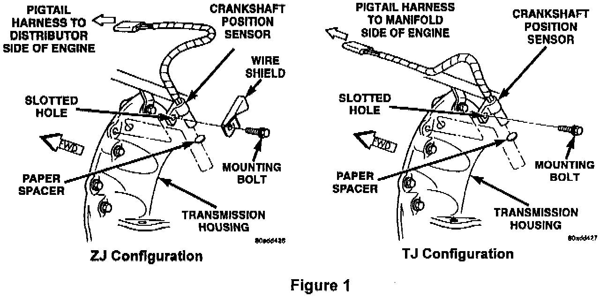

MIL ON, DTC's #28, #6A, #9B, #BA Set
NO: 18-14-97 Rev.AGROUP: Vehicle Performance
DATE: May 9, 1997
SUBJECT:
Rough Running Engine with Hex Codes $28, $6A, $9B, or $BA
THIS BULLETIN SUPERSEDES TECHNICAL SERVICE BULLETIN 18-14-97, DATED APR. 4, 1997, WHICH SHOULD BE REMOVED FROM YOUR FILES. ALL REVISIONS ARE HIGHLIGHTED WITH **ASTERISKS** AND INCLUDE MODEL YEAR CHANGES FOR ZJ MODELS.
MODELS:
1997 (TJ) Wrangler
**1997** (ZJ) Grand Cherokee
NOTE:
THIS BULLETIN APPLIES TO VEHICLES WITH A 4.0L ENGINE AND AUTOMATIC TRANSMISSION.
SYMPTOM/CONDITION:
MIL illumination with the potential for a rough running engine between 2500 to 3000 RPM. The MIL may be illuminated due to one of the following DTCs:
Hex $28 - NO CRANK REFERENCE SIGNAL AT PCM
Hex $6A - MULTIPLE CYLINDER MISFIRE
Hex $9D - INTERMITTENT LOSS OF CMP OR CKP
Hex $BA - MISFIRE ADAPTIVE NUMERATOR AT LIMIT
DIAGNOSIS:
Using the Mopar Diagnostic System (MDS) or the Diagnostic Scan Tool (DRB III) with the appropriate Diagnostic Procedures Manual, verify all engine systems are functioning as designed. If Diagnostic Trouble Codes (DTC's) other than those listed are present, record them on the repair order and repair as necessary before proceeding further with this bulletin.
Run the engine while monitoring the vehicle crank position signal. Slowly increase and decrease the vehicle engine rpm to determine if the vehicle crank position sensor signal is being lost. If no DTC's other than those listed above are present and the vehicle crank position signal is lost, perform the Repair Procedure.
PARTS/EQUIPMENT REQUIRED:
1 04897321AA Sensor, Crank Position (adjustable)
1 05252229 Spacer (only required for sensor R&I)
2 04641780 Tie strap
1 CH6000 Scan Tool (DRB III)
1 CH7035 General Purpose Interface Bus Cable (GPIB)
1 CH7000/7001 J1962 Cable
REPAIR PROCEDURE:
This bulletin involves replacing the crank position sensor with a new part to allow adjustment closer to the engine flywheel.
1. Remove the crank position sensor from the transmission bellhousing and discard the non adjustable sensor.
2. Install the new sensor p/n 04897321AA into the transmission bellhousing hole.
3. Rest the sensor against the flywheel/drive plate. With the sensor contacting the flywheel/drive plate, tighten the attaching bolt to 7 Nm (60 in-lbs).
NOTE:
IF THIS SENSOR IS REMOVED DUE TO OTHER SERVICE PROCEDURES, IT MUST BE PROPERLY REINSTALLED WITH A NEW CARDBOARD SPACER P/N 05252229.

4. Secure the sensor connector and wire using two plastic ties p/n 04641780. Position one tie to each side of the connector as applicable (Figure 1).
NOTE:
THE CRANK POSITION SENSOR CONNECTOR MUST BE SECURED TO PREVENT EXCESSIVE MOVEMENT AND POSSIBLE WIRE FATIGUE.
POLICY: Reimbursable within the provisions of the warranty.
TIME ALLOWANCE:
Labor Operation No: 08-15-80-94 0.7 Hrs.
FAILURE CODE: P8 - New Part